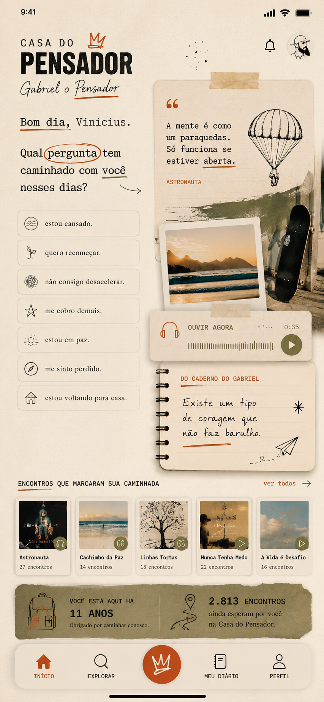

Uma casa para que a obra de Gabriel o Pensador continue encontrando pessoas durante toda uma vida.
Uma música não termina quando acaba o streaming. Uma letra não morre quando o álbum sai de moda. Uma ideia não envelhece quando a notícia passa. Mas o que acontece com elas enquanto esperam a próxima pessoa que precisa delas?
Elas precisam de uma casa. Não um arquivo. Não um streaming. Uma casa que as conheça, as organize, as apresente para quem está pronto para recebê-las.
A Casa do Pensador é essa casa — construída especificamente para a obra de Gabriel o Pensador. Ela não existe para mais nenhuma outra obra.

É um arquivo vivo do Brasil. Cada álbum, um capítulo. Cada letra, uma entrada de diário. Cada livro, uma camada de uma pessoa que passou trinta anos tentando entender o que significa pensar num país que prefere não pensar.
Do rap de denúncia dos anos 90 ao Grammy Latino de 2024. Uma carreira que não terminou — amadureceu.
O Diário Noturno. O Garoto Chamado Rorbeto — vencedor do Prêmio Jabuti. Uma literatura que poucos sabem que existe dentro da música.
"Estudo Errado" é de 1995. Ainda faz sentido hoje. Essa é a diferença entre uma obra e um hit.
"Pensa! O pensamento tem poder.
Mas não adianta só pensar.
Você também tem que dizer!
Diz! Porque as palavras têm poder.
Mas não adianta só dizer.
Você também tem que fazer!"
Algumas obras merecem mais do que serem consumidas. Elas merecem continuar encontrando pessoas.
A Casa do Pensador não quer licenciar conteúdo. Quer construir uma casa suficientemente humana para que uma grande obra continue chegando até as pessoas ao longo de toda uma vida.
Não é um aplicativo do Gabriel. Não é uma plataforma de cursos. Não é um Spotify do Pensador. Não é um clube de fãs.
É uma casa. Com constituição própria, estética própria, linguagem própria — construída especificamente para que a obra de Gabriel o Pensador continue encontrando pessoas que precisam dela.
Não por busca. Por momento. A Casa entende onde você está emocionalmente e encontra, em trinta anos de obra, o que faz sentido para aquele dia específico.
Um mapa vivo da obra — não cronológico, mas por tema e por pergunta. Descubra como a mesma ideia evoluiu de 1992 a 2024. Uma jornada que nenhum streaming consegue criar.
Jornadas de 7 a 30 dias sobre educação, Brasil, paternidade, linguagem. Construídas sobre a obra existente — músicas, livros, entrevistas, palestras — que nunca conversaram antes.
Uma frase, um verso, uma ideia — extraída de qualquer ponto de trinta anos de obra. Não a mais recente. A mais certa para hoje.
Você descreve o momento. A Casa identifica o sentimento e encontra, na obra inteira, o que ressoa com aquele dia. Não é busca. É encontro.
30 dias caminhando pela visão do Gabriel sobre educação, Brasil, família ou linguagem. Músicas, livros, entrevistas — nunca vistos juntos antes.
Uma música de 1997 que conversa com um poema de 2005 que encontra uma entrevista de 2023. Conexões que nenhum humano teria tempo de descobrir manualmente.
Um mapa vivo de como a obra do Gabriel previu, nomeou e questionou o Brasil ao longo de trinta anos. Uma experiência que seria impossível para qualquer outro artista — porque nenhum outro artista fez a mesma pergunta por tanto tempo, de tantas formas diferentes.
Se a resposta for não, a Casa fracassou. Se a Casa não puder ser específica para a obra do Gabriel e impossível para qualquer outro autor, ela também fracassou.
Encontra "Estudo Errado". Sente que alguém finalmente nomeou o que estava errado com a escola. Descobre que rap pode pensar.
Volta à obra. Encontra o Gabriel que escreveu sobre paternidade, sobre Brasil, sobre o que significa tentar mudar as coisas. Descobre camadas que não existiam aos 15.
Reencontra. A obra cresceu junto. As perguntas ainda não têm resposta — mas agora elas são companhia, não denúncia. Uma obra que amadurece junto com quem a habita.
"E se daqui a 30 anos alguém ainda pudesse encontrar Gabriel o Pensador pela primeira vez?"
É um motor patrimonial. Uma tecnologia que passou três anos aprendendo a organizar patrimônio intelectual complexo — com o corpus mais exigente que existe.
A Bíblia. 66 livros. Dezenas de autores. Séculos de contexto histórico e cultural — entregue como presença diária personalizada, em produção real. Se conseguimos fazer isso com a obra mais complexa da humanidade, conseguimos fazer com qualquer grande obra.
O problema de organizar trinta anos de músicas, livros, entrevistas, palestras e poemas é exatamente o problema que esse motor foi construído para resolver.
A obra pertence ao Gabriel. A Casa pertence ao Gabriel. A tecnologia que a torna possível é o que a CAPIO traz.
Viemos perguntar se faz sentido construir uma casa para uma obra que merece uma.
O modelo, o formato, a experiência — tudo isso se descobre junto. O que não se descobre junto é se a obra do Gabriel merece durar mais trinta anos.
"Seja você mesmo, mas não seja sempre o mesmo."
A Casa do Pensador existe para que essa ideia continue chegando às pessoas — por décadas.